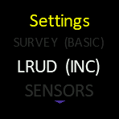
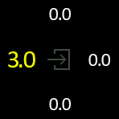

You can enter LRUD ( Left-Right-Up-Down) measurement (or estimation) values to describe the corridor section of the cave at each station.
In Verbose survey mode this is done by going to
OPTIONS > SETTINGS > LRUD(LIST or INC)

INC: In this mode the numerical value will increase gradually. It is the slowest of the two mode but allows to enter precise values
LIST: In this mode the numerical value will increase according to a predetermined set of length. It's the fastest mode and typically the one used when value are estimated rather than measured.
In BASIC Mode, you enter the LRUD menu when you are on the READY screen ( the one with WHITE background) with a click combination:
LEFT-RIGHT-LEFT-RIGHT
Once you are on the LRUD entry screen you increase the value moving the cursor left and go to the next value moving it right.

Finally you exit the screen by selecting the button in the middle :